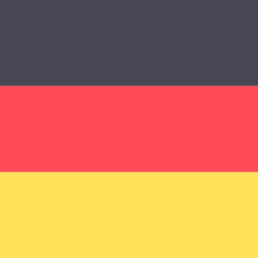
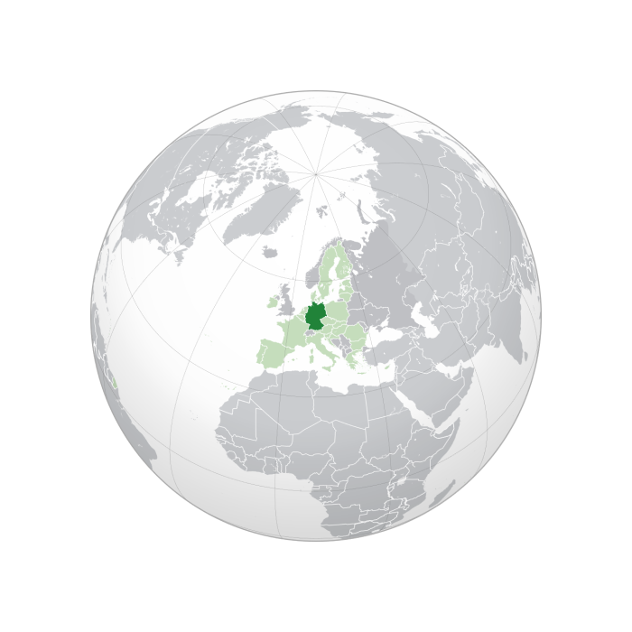
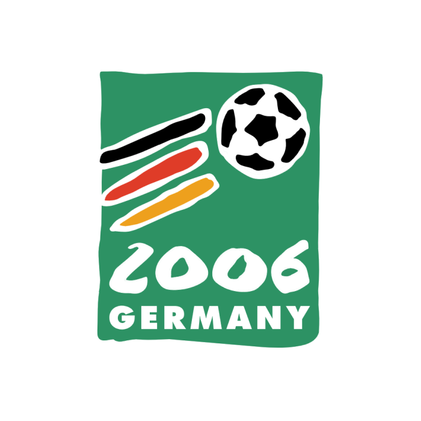

Germany Flag
The vote to choose the hosts of the 2006 tournament was held in July 2000 in Zürich, Switzerland. It involved four bidding nations after Brazil had withdrawn three days earlier: Germany, South Africa, England and Morocco. Three rounds of voting were required, each round eliminating the nation with the fewest votes. The first two rounds were held on 6 July 2000, and the final round was held on 7 July 2000, which Germany won over South Africa.

Germany Location
Accusations of bribery and corruption had marred the success of Germany's bid from the very beginning. On the very day of the vote, a hoax bribery affair was made public, leading to calls for a re-vote. On the night before the vote, German satirical magazine Titanic sent letters to FIFA representatives, offering joke gifts like cuckoo clocks and Black Forest ham in exchange for their vote for Germany. Oceania delegate Charlie Dempsey, who had initially backed England, had then been instructed to support South Africa following England's elimination. He abstained, citing "intolerable pressure" on the eve of the vote. Had Dempsey voted as originally instructed, the vote would have resulted with a 12–12 tie, and FIFA president Sepp Blatter, who favoured the South African bid, would have had to cast the deciding vote.

Bid Logo
More irregularities surfaced soon after, including, in the months leading up to the decision, the sudden interest of German politicians and major businesses in the four Asian countries whose delegates were decisive for the vote. Just a week before the vote, the German government under Chancellor Gerhard Schröder lifted their arms embargo on Saudi Arabia and agreed to send grenade launchers to the country. DaimlerChrysler invested several hundred million euros in Hyundai, where one of the sons of the company's founder was a member of FIFA's executive committee. Both Volkswagen and Bayer announced investments in Thailand and South Korea, whose respective delegates Worawi Makudi and Chung Mong-joon were possible voters for Germany. Makudi additionally received a payment by a company of German media mogul Leo Kirch, who also paid millions for usually worthless TV rights for friendly matches of the Germany team and FC Bayern Munich.